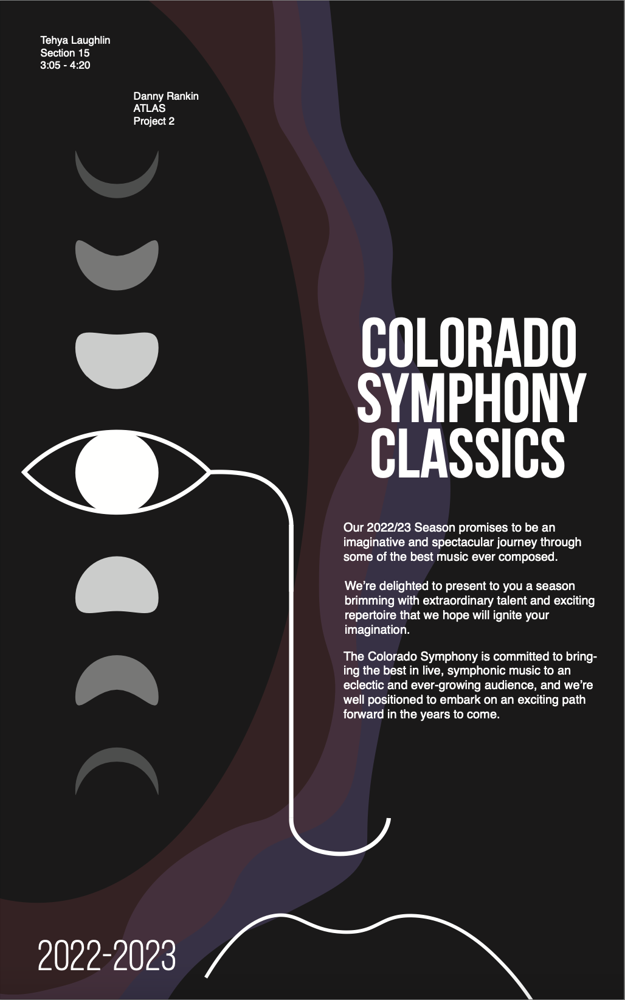
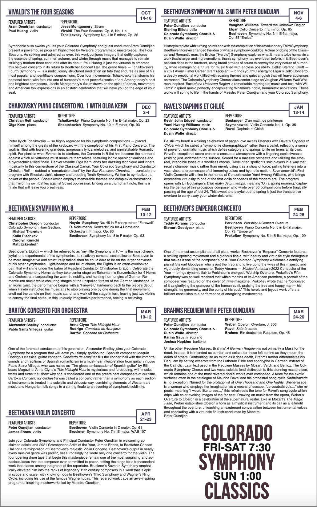

<!DOCTYPE html>
<html lnag="en" dir="ltr"></html>
    <head>
        <meta charset="utf-8">
        <title>Tehya's Portfolio</title>
        <link rel="stylesheet" href="/css/style.css">
        <link rel="stylesheet"  href="/css/paneling.css">
    </head>
    <body>

        <!-- Art - Projects - Contact -->

            <div class="box">
                <h3>Art</h3>
                <h3>Projects</h3>
                <h3>Contact</h3>
            </div>

        <!--Landing--> 
            <div>
                </a>
                <p>Hello! My name is Tehya, my pronouns are she/her/hers. I am a student at CU Boulder studying Creative Technology and Design. I plan to minor in Computer Science and Art Studio Practices. Growing up I've liked art and math equally, and I was first exposed to coding in middle school when I wrote a program for a robot to run automatically in a VEX competition. In high school, I took coding classes every year, and explored javascript animation, app development, and some of the more algorithmic coding things with Java. It wasn't really a question of <em>if</em> I would do coding in college, more like a question of <em>where?</em> and <em>would I be able to do art as well?</em> My coding teacher in high school told me about CU's Creative Technology and Design program. I plan on doing Web Development as a part of my career, but I also want to continue to implement art into my life.
                    In 2020, I started and internship with Anark Corporation doing QA testing for software. This included manual testing, writing test cases, and automated testing. In August 2021, I started college and continued this internship in a more professional manner, with the same tasks, increased responsibilities and more hours. This experience has helped me develop great professional skills, and guide me on my way toward my career goals.</p>
            </div>

        <!-- Venn Diagram-->

        <div class="vennBox">
            <h2>Design</h2>
            <svg xmlns="http://www.w3.org/2000/svg" version="1.1" height="40%" width="40%" viewBox="0 0 100 100" xmlns:xlink="http://www.w3.org/1999/xlink">
                <path id="D"  d="M 50 8 A 30 30 0 1 0 21 59 30 30 0 0 1 41 36 30 30 0 0 1 50 8" />
                <path id="DC" d="M 50 8 A 30 30 0 0 0 41 36 30 30 0 0 1 59 36 30 30 0 0 0 50 8" />
                <path id="C"  d="M 50 8 A 30 30 0 1 1 79 59 30 30 0 0 0 59 36 30 30 0 0 0 50 8" />
                <path id="WD" d="M 50 52 A 30 30 0 0 1 21 59 30 30 0 0 1 41 36 30 30 0 0 0 50 52" />
                <path id="DCW"  d="M 50 52 A 30 30 0 0 1 41 36 30 30 0 0 1 59 36 30 30 0 0 1 50 52" />
                <path id="CW" d="M 50 52 A 30 30 0 0 0 79 59 30 30 0 0 0 59 36 30 30 0 0 1 50 52" />
                <path id="W"  d="M 21 59 A 30 30 0 1 0 79 59 30 30 0 0 1 50 52 30 30 0 0 1 21 59" />
            </svg>
            <h2>Code</h2>
        </div>
        <h2 class="box">Writing</h2>

        <!-- Projects -->
        <div class="projects">
            <div class="arrowBox">
                <button class="pInline button" id="left"> ← </button>
                <button class="pInline button" id="right"> → </button>
            </div>

            <div>
                <!-- D -->
                <div class>
                    <h2>Design</h2>
                    <div class="wrapper">
                        <div class="aside">
                            <div class="ulBar">
                                <hr class id="orchestra"></hr>   
                                <hr class="lineNotSelected" id="ffcu"></hr>   
                                <hr class="lineNotSelected" id="logo"></hr>   
                            </div>
                        </div>
                   
                        <main>
                        <div class="wrapper_inner">

                            <!--Colorado Symphony Orchestra-->
                            <div class="pLCBox">
                                <h5>Colorado Symphony Concert Schedule Poster</h5>
                                <p>Expressive and Abstract design for the front of the poster, including text content by the Colorado Symphony. Informational design on the back, organizes 9 concerts and their information.</p>
                                
                                
                            </div>
                            <!--FFCU-->
                            <div class="panelHidden">

                            </div>
                            <!--Logos-->
                            <div class="panelHidden">

                            </div>
                        </div>
                        </main>
                    </div>
                </div>
                <!-- DC -->
                <div>


                </div>
                <!-- C -->
                <div>


                </div>
                <!-- CW -->
                <div>


                </div>
                <!-- W -->
                <div>


                </div>
                <!-- WD -->
                <div>


                </div>
            </div>
        </div>
        <!-- Art (Link out) -->

        <!-- Contact -->

    </body>
</html>